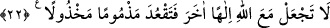
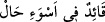

O tek kanatlı kuş, iki kanatlı kesilir, kanatlarını açar.
Ondan sonra yüzüstü, eğri büğrü değil,
Doğru yolda güzelce uçar gider.
Allah’ım bizi yakîn ve temkîn ehlinden eyle!
22. Allah ile beraber bir başka ilah edinme, yoksa kınanmış ve yalnız başına
bırakılmış olarak oturup kalırsın.
“Allah ile beraber bir başka ilah edinme,” Burada hitap Rasûlullah (s.a.)’edir.
Kasdedilen ise ümmetidir. Çünkü bazı âlimler emirlerde aslolanın Rasûlullah (s.a.),
nehiylerde ise ümmeti olduğunu söylemişlerdir. “yoksa kınanmış ve yalnız başına
bırakılmış olarak oturup kalırsın.” Yâni meleklerin ve mü’minlerin kınamasını ve
Allah tarafından da terk edilmeyi kendi üzerine çekmiş olursun. Çünkü Allah’a ortak
koşulan şey, yardım etmekten âcizdir. Burada muvahhid kimsenin övgü ve yardımı hak
ettiğine, Hakk’ı taleb eden kişinin Allah’la birlikte başka bir şeyi, dünya, âhiret ve
onların nimetlerini istemeyeceğine işâret vardır.
Bir kimsenin durumunu soran kişiye “
kâidun fî esvei hâl” dendiğinde o
kimse ister ayakta, ister oturuyor olsun onun berbat bir durumda olduğu söylenmek
istenmiştir. Bazen “kuûd (oturma)” kelimesinin gerçek mânâsı da kasdedilir. Çünkü
kınanmış, terk edilmiş bir kimsenin durumu şaşkın şaşkın oturmaktır. Ya da kınanan
kimsenin genel durumu dile getirilmiştir ki o da oturmaktır.
[56]. İbnü’l-Esir, Nihaye, I, 155; Münâvi, II, 179
[57]. Tirmizî, İlim, 19
[58]. Münâvî, IV, 433
[59]. Bk. İbn Arrak, I, 223
[60]. Deylemî, Hadis no: 840; Münâvi, II, 470
[61]. Deylemî, Hadis no: 842
[62]. Deylemî, Hadis no: 2161
[63]. Deylemî, Hadis no: 2235